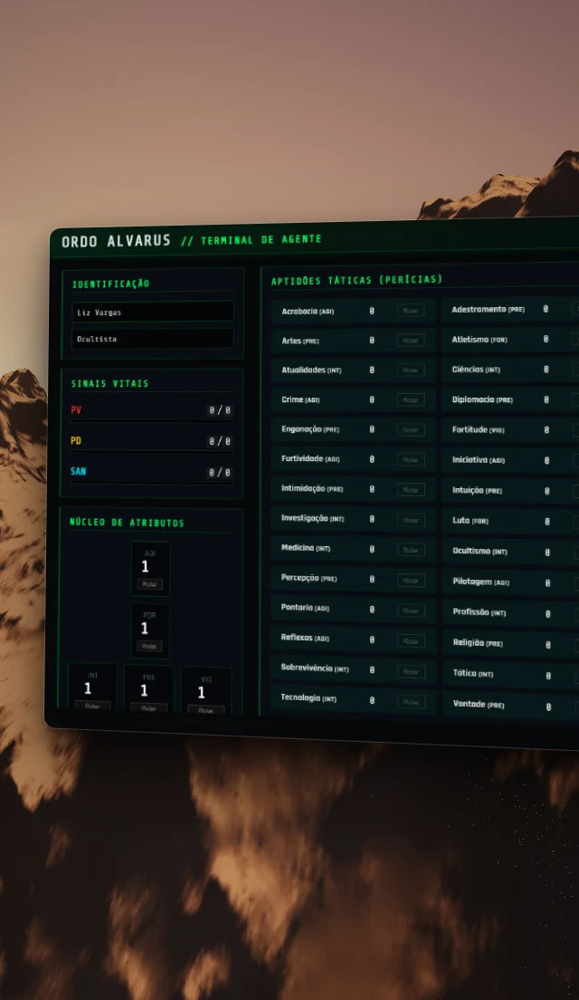
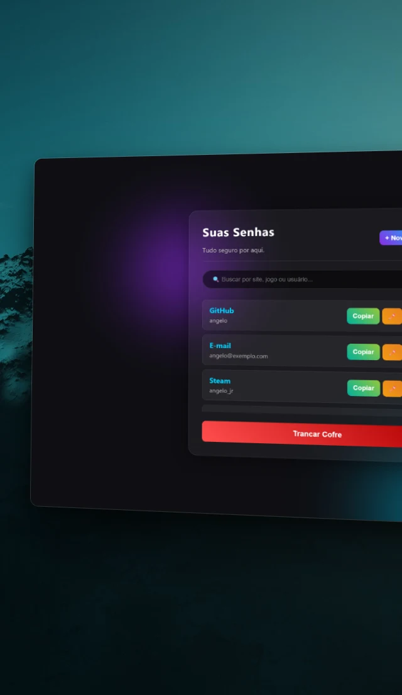
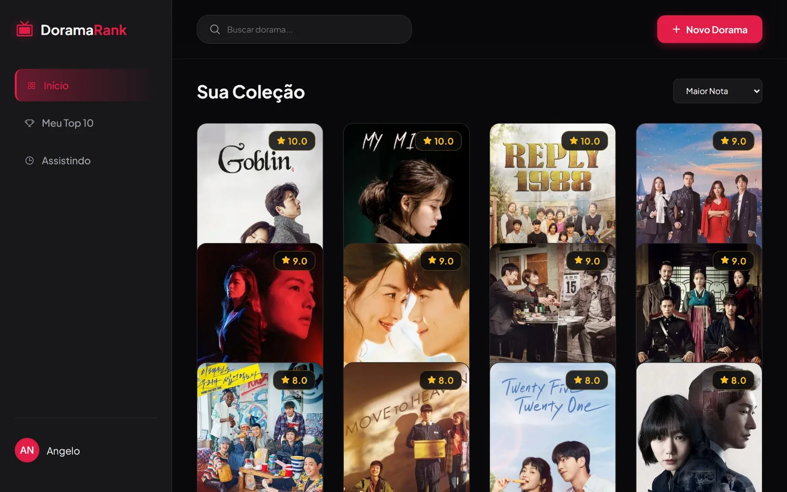
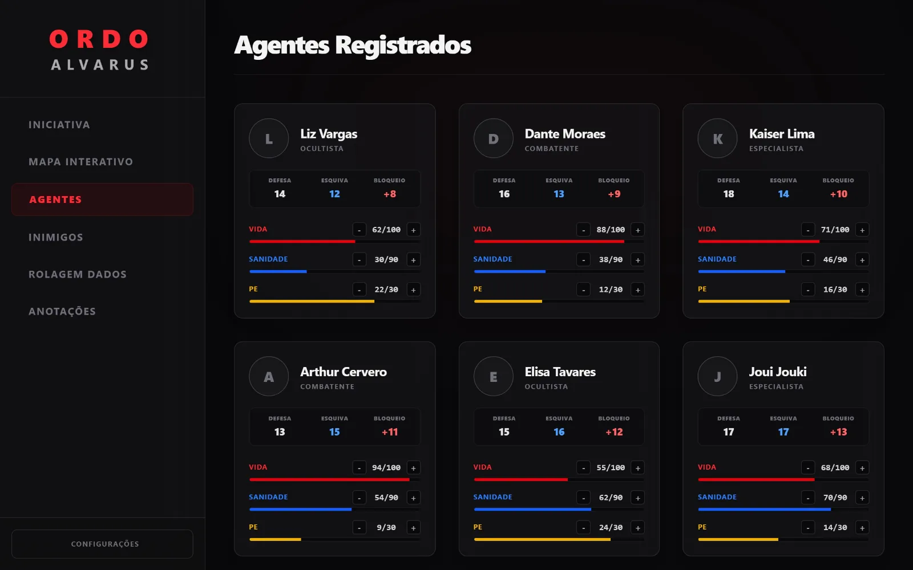
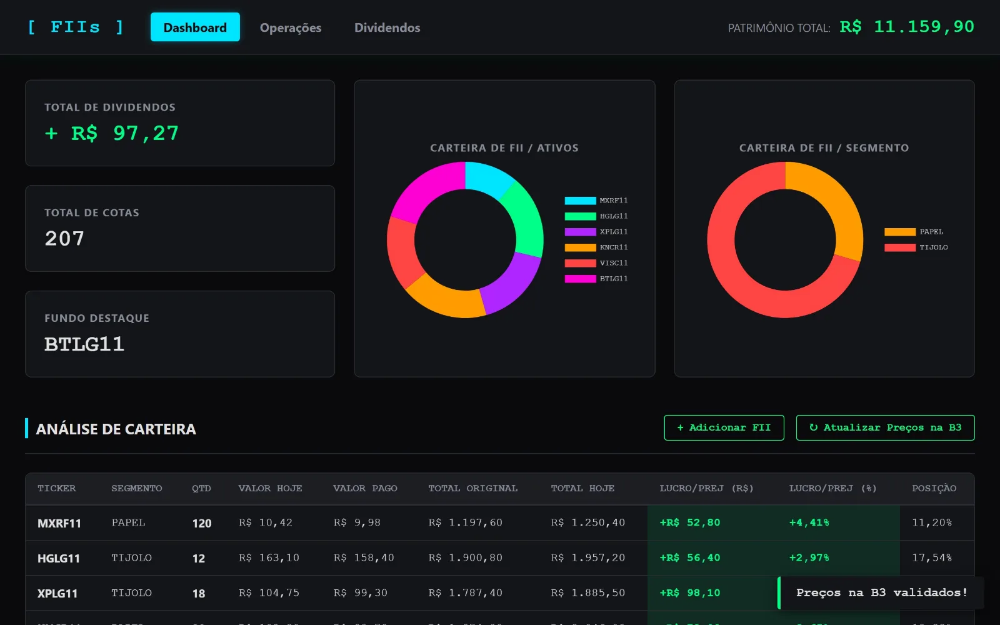
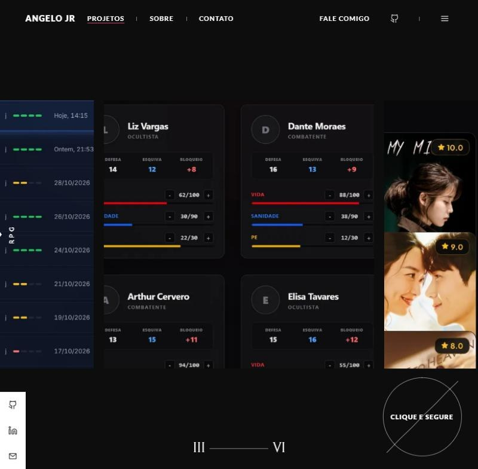

Angelo, desenvolvedor de apps desktop
Sou estudante do 4º ano de Ciência da Computação e construo apps desktop que rodam direto na máquina da pessoa, com os dados sob o controle de quem usa.
-

· Primeiros passosComecei a publicar: um bot em Python, uma ficha de RPG e um rastreador de animes.
Ver a ficha -

· Meu CofreMeu primeiro app em Rust: um gerenciador de senhas local, feito com Tauri.
Ver o código -

· DoramaRankElectron, SQLite e a API do TMDB em um catálogo com estatísticas.
Ver projeto -

· Master DashboardA ficha de RPG cresceu e virou uma mesa virtual, com React e palco 3D.
Ver projeto -

· FII TrackerCotações da B3 e um livro-caixa que recalcula a carteira inteira.
Ver projeto -
 · Parcelas
· ParcelasReact, TypeScript e SQLite para controlar cada parcela do cartão.
Ver projeto -
 · VaultCore
· VaultCoreVoltei às senhas com Argon2id, testes, integração contínua e atualização assinada.
Ver projeto -

· Este siteReuni tudo aqui e revisei meus repositórios.
Ir para o início
Quem sou
Sou estudante do 4º ano de Ciência da Computação e construo apps desktop que rodam direto na máquina da pessoa, com os dados sob o controle de quem usa.
Desde fevereiro de 2026 publiquei sete apps com instalador para Windows, cinco deles com Rust e Tauri. Transito entre o baixo nível, com C++ e Rust, e o alto nível, com JavaScript e Python.
Estou aberto a novas oportunidades e desafios, no Brasil ou fora dele.
Em resumo
- 7apps com instalador para Windows
- 5apps escritos com Rust e Tauri
- 21testes automatizados em Rust
- 14repositórios públicos no GitHub
-
Projeto mais recente
-
Dados no computador de quem usa
Os cinco apps principais funcionam sem conta e guardam tudo localmente.
-
O que aparece nos meus projetos
Como eu trabalho
-
Os dados ficam com quem usa
Meus apps principais funcionam sem conta e sem servidor próprio. Do cofre de senhas à carteira de investimentos, tudo fica no computador da pessoa.
-
Refaço quando aprendo
O Meu Cofre abriu caminho para o VaultCore, e a ficha de RPG virou uma mesa virtual. Cada versão resolve o que a anterior deixava de fora.
-
Publico para outras pessoas usarem
Os cinco apps principais têm instalador público, e quatro deles têm o código aberto no GitHub.
Onde usei cada ferramenta
-
Apps desktop
Rust, Tauri, Electron
-
Interfaces
React, TypeScript, Tailwind CSS, Three.js
-
Dados e APIs
SQLite, LocalStorage, TMDB, Brapi, Jikan
-
Segurança
Argon2id, AES-256-GCM, atualização assinada
-
Back-end e automação
Python, FastAPI, SQLAlchemy, Selenium
-
Qualidade
Testes em Rust, Pytest, GitHub Actions
Agora
Atualizado em outubro de 2026
- Cursando o 4º ano de Ciência da Computação
- Preparando a nova versão do FII Tracker, com a carteira protegida por senha
- Planejando Windows Hello e códigos 2FA para o VaultCore
- Aberto a novas oportunidades
Outros projetos
-
Anime Tracker
Aplicação web para organizar animes, com busca no MyAnimeList e regras de negócio testadas.
FastAPI, SQLAlchemy, Pytest
-
Painel Tático
Ficha automática de Ordem Paranormal que roda no navegador, sem instalar nada.
HTML, CSS, JavaScript
-
Meu Cofre
Gerenciador de senhas local, com gerador de senhas e medidor de força.
Tauri, Rust, JavaScript
-
Monkeytype Auto-Typer
Bot que lê as palavras na tela e digita com intervalos aleatórios, como uma pessoa.
Python, Selenium
Vamos conversar?
Tem uma vaga, uma ideia ou uma dúvida sobre algum projeto? Escreva pelo formulário ou por um destes canais.
- angeloDev1@outlook.com
- angelo-junior
- GitHub
- AngeloJR-web